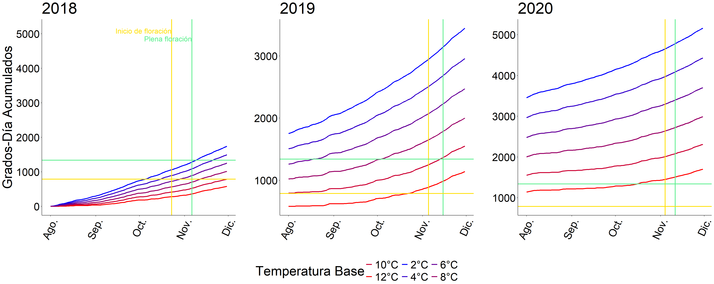

Cálculo de la temperatura base óptima utilizando el Método del Coeficiente de Regresión (Yang et al., 1995)
El coeficiente de regresión \(b\) se calcula usando la fórmula:
\[ b = \frac{n \sum_{i=1}^{n} GDD_i T_i - \sum_{i=1}^{n} T_i \sum_{i=1}^{n} GDD_i}{n \sum_{i=1}^{n} T_i^2 - \left(\sum_{i=1}^{n} T_i\right)^2} \]
Donde:
La temperatura base (\(T_b\)) se calcula usando la ecuación:
\[ T_b = \frac{\sum_{i=1}^{n} T_i \sum_{i=1}^{n} d_i T_i - n \sum_{i=1}^{n} d_i T_i^2}{\sum_{i=1}^{n} d_i \sum_{i=1}^{n} T_i - n \sum_{i=1}^{n} d_i T_i} \]
Donde:
## BaseTemp R2 RMSE
## 1 2 0.999679174 26.26360052
## 2 4 0.999699974 21.77565241
## 3 6 0.999716786 17.66195374
## 4 8 0.999707230 14.47375956
## 5 10 0.999715963 10.98024659
## 6 12 0.999836086 6.12030125## BaseTemp R2 RMSE
## 1 2 0.999309627 37.5314242
## 2 4 0.999260304 33.3171520
## 3 6 0.999169809 29.4781294
## 4 8 0.998963558 26.5673995
## 5 10 0.998653768 23.3576997
## 6 12 0.998392870 18.7959742Temperatura base óptima para inicio de floración
## [1] 12Temperatura base óptima para plena floración
## [1] 2Gráfico con predicciones y datos puntuales para cada año 
Inicio de floración (10%) con 789.40 grados-día acumulados y Temperatura base de 6°C a partir del 1 de agosto
Plena floración (%máx) con 1341.36 grados-día acumulados y Temperatura base de 2°C a partir del 1 de agosto